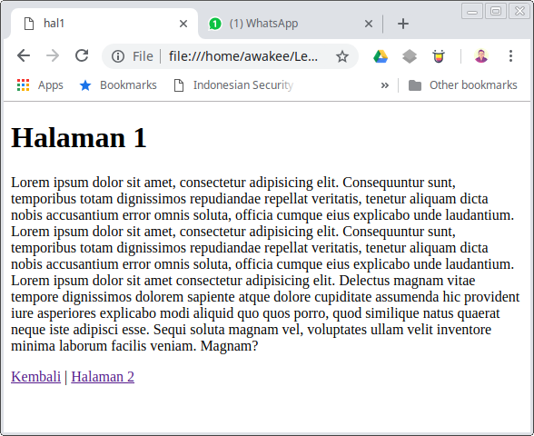
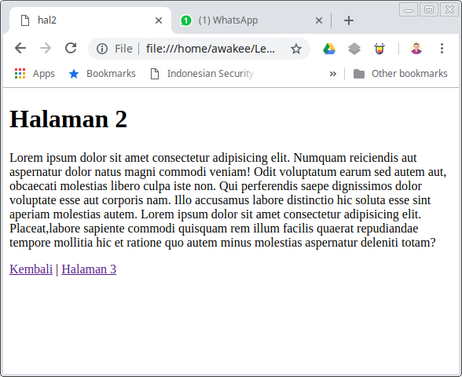
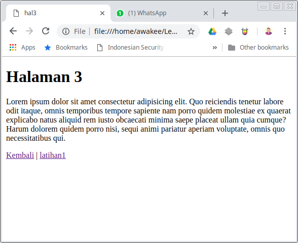

Saya mempunyai 3 buah halaman. Dan saya ingin ketiga halaman tersebut mempunyai style font arial yang sama. Maka saya akan membuat file baru dan menyimpannya dengan nama style.css baru dengan isi seperti berikut.
body {
font-family: Arial;
}
Apa artinya ? Saya menginginkan font style pada semua body menjadi arial.
Berikut contoh gambar yang belum diberikan style dengan font arial
  Kemudian mari kita lihat link dibawah ini: